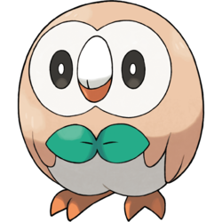
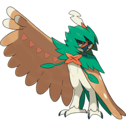

Dartrix (Japanese: フクスロー Fukuthrow) is a dual-type Grass/Flying Pokémon introduced in Generation VII. evolves from Rowlet starting at level 17 and evolves into Decidueye starting at level 34.
Biology
Dartrix is an avian Pokémon that resembles an owl. Most of its plumage is white, but it has dark brown feathers covering its head, shoulders, and back. Its heart-shaped, facial disc is also white, and it has large eyes with dark irises that usually appear closed, a stubby beak that has a white upper jaw and orange-brown lower jaw, and two short tufts of feathers on the back of its head. Two green leaves curve around its face, resembling an asymmetric cut; the leaf on its right is longer than the one on the left. Under its chin are two smaller leaves that resemble a bowtie, and there are two pointed ones on its rear that form its tail. Its wings have two tan spots on the upper side and leafy plumage close to the body on the underside. Within the leaves under its wings are two orange-brown objects known as blade quills. Dartrix has orange-brown talons with two toes facing forward and one facing backward. This alert Pokémon is sensitive to the presence of others around it and is capable of launching attacks on unseen enemies behind it. Razor-sharp blade quills are stored inside its wings, and it can propel them with astounding precision. By bending the feathers, it can even alter the trajectory of its strikes. Dartrix is narcissistic by nature, spending a great deal of time grooming its feathers to maintain its appearance. This compulsion will occasionally lead to it losing focus when its plumage is ruffled or dirty, even retiring from battle to preen. It has been described as a bit of a birdbrain as it has a tendency to bungle things up. Its desperate struggle to cover its mistakes sometimes makes the situation messier than ever. A Trainer who helps this Pokémon through this difficult stage will allow it to reach its full strength.[1]
Facts
Origin
Dartrix appears to be based on owls such as the barn owl or the stilt-owl. It specifically appears to be inspired by the Hawaiian pueo owl, which is known for flying over grassy areas on the Hawaiian Islands, hence its Grass typing. Rowlet is based on an owl, sharing the most similarities with members of the Tytonidae family — species collectively known as "barn owls" that have heart-shaped faces and dark eyes. In particular, it closely resembles the common barn owl, which was introduced to Hawaii. Alternatively, it may be inspired by the Eastern grass owl or the African grass owl, along with the local pueo owl that is known for flying over grassy areas on the Hawaiian Islands, hence its Grass typing.
Name origin
Dartrix may be a combination of dart and the genus Strix or tricks.
Fukuthrow may be a combination of 梟 fukurō (owl) and throw.
Evolutive Line
|  |  | |
|---|---|---|
| Rowlet | Dartrix | Decidueye |